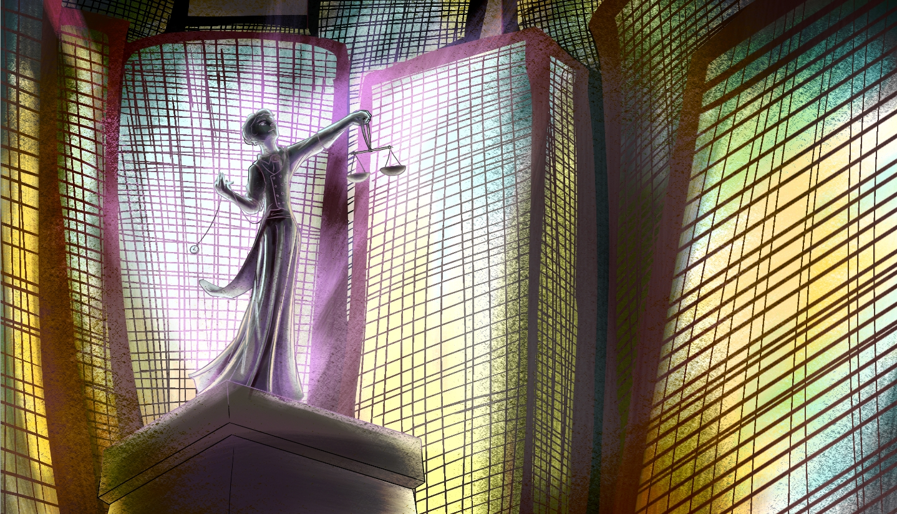

Goverment

World Peace Committee (WPC)
The WPC or World Peace Committee was formed shortly after WW4 as One World (OW) was seen unfit to deal with matters that affect multiple countries. A consensus was reached after OW was found guilty of committing multiple counts of treason, leaking state secrets and being unable to act in the face of crisis. On occasions OW has burnt down protected forests for a road, been unable to resolve and stop conflicts, exploited and abused civilians, and has been biassed in several confrontations. Because of this, a new organisation was formed with leading military, science and political people that had to go through several background checks and are closely monitored. They cannot hold any real power until the entire group involved has agreed or a consensus or alternative reached.
The PM cooperation
The People’s Mind Corporation is kinda based off the film thing called the wave and the leviathan corporation. The PM Corporation is a group set to have complete control over the mind of everyone. They work under the government and hide their research by bribing and hiding their operation underneath the guise of science and promising the government a weapon. They use methods of propaganda on their lower workers. who are not entirely loyal. They are not at all concerned about the balance of nature and the sacredness of human kind; they wish to control all knowledge, time, memories, resources and therefore everyone. It stands for the people's mind corporation.
Racizm
People are led to believe that humans are the best race and that pseudo/parahumans are malformed, poor imitations of them and should be eradicated. A racist nickname for pseudo/parahumans is half breeds. Although people are discriminatory against pseudo humans it is mainly towards pseudo humans with predator animal traits because they tend to be a lot stronger than humans and are a minority. ‘Harmless’ pseudo humans get a lot better treatment but still get a cold shoulder and are babied as if they are pets. With the military there if there is a predatory pseudo/parahumans in a unit there is usually only one so they can be overpowered by humans if needed. The pseudo-humans were made in the lab and bred, they were originally bred by selection but that led to them getting smarter and they fought back leading to the experiments on humans becoming illegal but since they do not see pseudo humans as humans small underground experiments are happening and the authorities just look the other way.